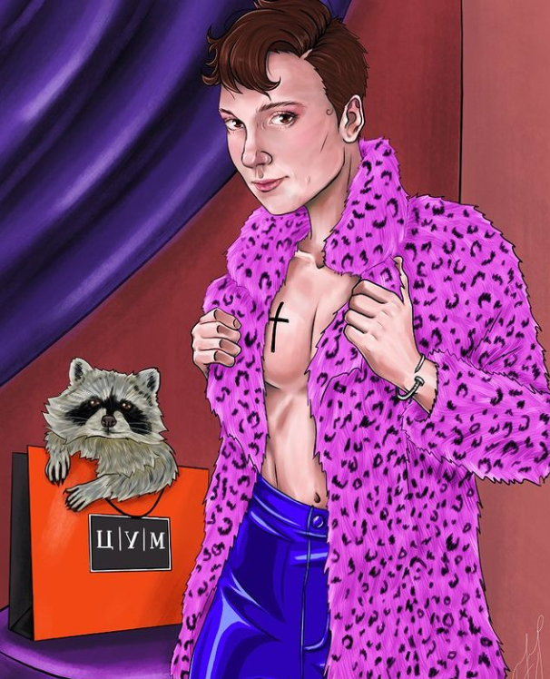

Привет всем, меня зовут Пена, и это мой виртуальный квадратный мир!
Будьте готовы к волнующим историям и немного юмора 🤣🤣 Кроме того, я люблю открывать для себя новые места, путешествовать и пробовать разные виды пиццы по всему миру. Я расскажу вам о моих приключениях в пиццериях, интересных рецептах и просто о всяких вкусных мелочах.
Здесь я буду делиться своими наблюдениями, идеями и рассказывать о всяких интересных вещах. Погрузитесь в мои мысли и откройте для себя новые горизонты! Здесь вы найдете истории из моей работы уборщицей на фабрике пиццы. Я поделюсь своими приключениями, забавными случаями и расскажу о замечательных людях, с которыми я встречаюсь каждый день. Я приглашаю вас стать частью моего увлекательного путешествия. Присоединяйтесь ко мне, чтобы обсудить самые занимательные темы и поделиться своими историями.
Добро пожаловать в мой блог!
